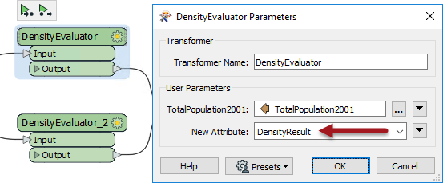
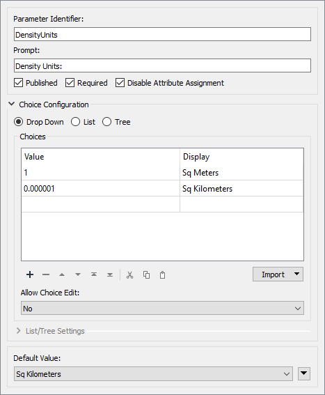
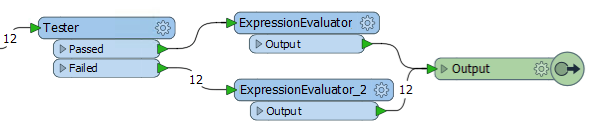

This is why - so far - we've had the two transformers in parallel streams. If we had them in series in the same stream then the results of the second custom transformer would overwrite the results of the first.
After completing this lesson, you’ll be able to:
A colleague - with our help - has created a custom transformer that calculates density for a particular area. However, we need to work on it further to make it more generic - and to expand its capabilities.
Because we used "Handle With Published Parameters" for the custom transformer's Attribute References parameter, the workspace will already be handling schema properly. So, to an extent we don't have to worry - but there are improvements we can make.
Open the starting workspace in FME Workbench (2022.0 or later).
Notice that, currently there are two instances of the custom transformer. Both produce an attribute with the same name (DensityResult). It would be helpful if the user of the custom transformer could define the name of that attribute. Let's set up the transformer to allow that.
Click on the tab labeled DensityEvaluator to switch the canvas to the custom transformer definition. Inspect the parameters for the ExpressionEvaluator. Click the drop-down arrow next to Result (DensityResult) and choose User Parameter > Create User Parameter:

When prompted, click OK to accept the default settings. Return to the main tab and check the parameters for each DensityEvaluator instance. There should be the option to set the name of the New Attribute:

You can now move the instances so they are joined in sequence (rather than parallel) and change the two output attribute names from DensityResult to something more specific for this scenario (PopulationDensity2001 and PopulationDensity2011):

Looking at the custom transformer parameters we can also see that the prompt for the attribute to analyze is called "TotalPopulation2001". Obviously, this is not very generic.
Return to the DensityEvaluator tab and browse the Navigator window to find the related published parameter. Right-click on the parameter and click Manage User Parameters.

In the dialog that opens, ensure you have TotalPopulation2001 selected. The Parameter Identifier should say TOTALPOPULATION2001. Change the Parameter Identifier to DensityAttribute and the Prompt to Attribute to Analyze. Reset the Default Value to be an empty field:

Click OK to close the dialog. Return to the Main tab and check the custom transformer parameters to prove the label change worked. Notice, however, that there is now no attribute selected. So select the correct attributes:

...and then run the workspace to show that the output is still correct.
At the moment this workspace is calculating the number of items (in this exercise, persons) per square kilometer of land. This works for the original scenario, however, other uses of this transformer might find different units to be more useful.
Therefore we’ll implement a parameter for users to be able to select their units of choice.
In the DensityEvaluator tab, browse the Navigator window and right-click on the entry labeled User Parameters. Select the Manage User Parameters option.
Click the green plus icon to insert a new user parameter. Choose type Choice. Set the following parameters:
| Parameter Identifier | DensityUnits |
| Prompt | Density Units: |
| Published | Checked |
| Required | Checked |
| Disable Attribute Assignment | Checked |
| Choice Configuration | Drop Down |
Make two entries into the Choice Configuration table:
| Value | Display Name |
|---|---|
| 1 | Sq Meters |
| 0.000001 | Sq Kilometers |
Fill out the remainder of the dialog:
| Allow Choice Edit | No |
| Default Value | Sq Kilometers |
Your final dialog should look like this:

Then click OK to close this dialog and add the published parameter.
Now we’ve defined a published parameter so the user can set the units, but we have to use it in the custom transformer.
Staying in the DensityEvaluator tab, inspect the parameters for the AreaCalculator transformer. For the Multiplier field, click the drop-down arrow and select the newly defined user parameter, DensityUnits:

Back in the main canvas the custom transformer now has a parameter for the end-user to select the output density units:

Experiment by running the workspace using different units, to prove that the changes were implemented properly. Notice that, because Attribute Assignment was set to "Off" the end-user isn't able to use an attribute to set the Density Units.
Although it’s not needed for this population density calculation, another useful function for this transformer would be the ability to weight the density calculations. Carry out the following steps to set it up.
The weighting will come from an incoming attribute, which means we need to be able to handle this in the custom transformer’s schema.
Our source data doesn't have any fields we could reasonably use for weighting the output. Therefore return to the Main canvas tab and add a RandomNumberGenerator transformer in order to generate a test attribute:

Inspect the parameters dialog for the RandomNumberGenerator and, for the purposes of this exercise, set:
| Minimum Value | 0.1 |
| Maximum Value | 1 |
| Decimal Places | 1 |
| Generated Number | WeightedAttribute |
Now we have an attribute we need to expose it in the custom transformer, in order to use it.
Return to the DensityEvaluator tab where the transformer is defined. Inspect the parameters for the Input port object. Put a checkmark against the WeightingAttribute attribute:

This will cause the attribute to be exposed in the custom transformer definition.
It will also cause a user parameter to be created. Locate the parameter in the Navigator window (it should be called WEIGHTEDATTRIBUTE) right-click on it and choose Manage User Parameters.
For WeightedAttribute, uncheck Required and clear the Default Value field, as this should not be compulsory (the user might not have an attribute to weight the results by):

Now we can use the attribute inside the custom transformer.
Make a copy of the existing ExpressionEvaluator and connect it in parallel to the current one. Then put a Tester in beforehand where the Passed port goes to one ExpressionEvaluator and the Failed port goes to the other:

Inspect the Tester parameters and make a test for WeightedAttribute > 0

Now that the attribute is exposed in the custom transformer, we can use it in the equation for calculating density. Inspect the parameters for the ExpressionEvaluator transformer connected to the Tester:Passed port.
Change the equation to:
($(POPULATION)*@Value(WeightedAttribute))/@Value(NeighborhoodArea)
To clarify, multiply the existing POPULATION attribute by the WeightedAttribute and place parentheses around that part of the expression.
Save the parameter changes and run the workspace to check the result.
Then change the custom transformer parameters to use WeightedAttribute. Remember – the results will be different every time because we’re generating the weighted attribute randomly at runtime!
Experiment selecting the weighted attribute in the main canvas, and not selecting it. When no attribute is selected then the features should pass through the Failed port and no weighting is used in the calculation:
